Elige uno o más números disponibles de la grilla y deja tu nombre y contacto con quien te vende. Una vez pagado, el número queda reservado para ti en el sorteo.
Lo recaudado va en apoyo del Festival de la Primavera, una tarde gratuita para la niñez, las juventudes y las familias del barrio. Cada número suma al sorteo y al festival.